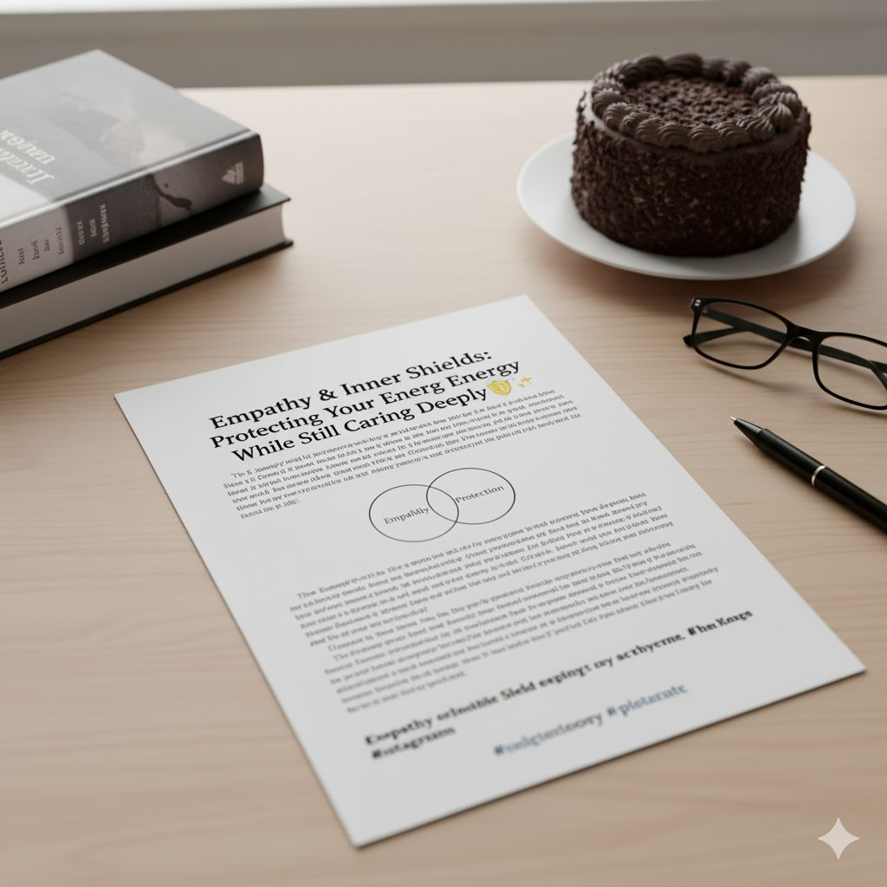
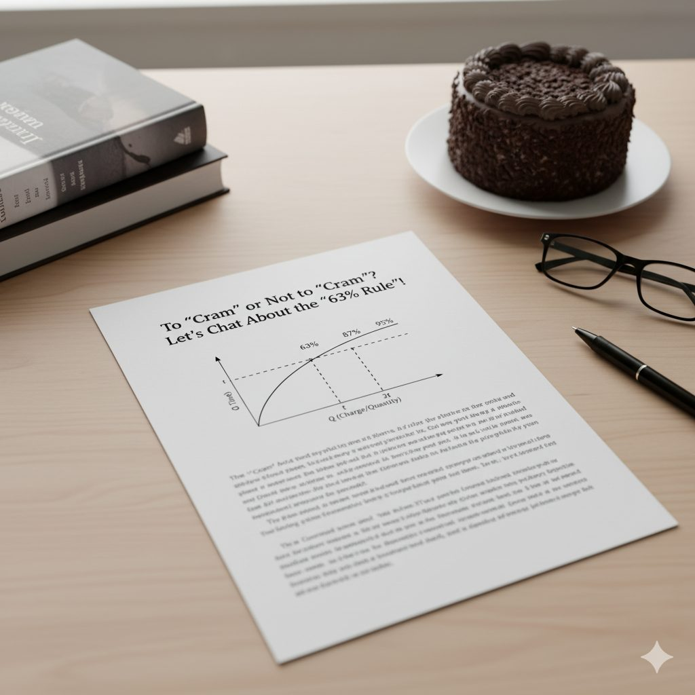

Notes on decisions, focus & teams
Short pieces on the mental models I use when managing projects and working with people. Longer case-study write-ups live in Work.
The 40/70 Rule
Colin Powell's rule for decisive leadership: when you have between 40 and 70 percent of the information, that's the time to make a decision. Less, and you're guessing; more, and you're late.

Empathy & inner shields
Empathy means feeling with someone — but for highly empathetic people it can mean carrying their burdens long after the conversation ends. On building boundaries that keep empathy sustainable.
Parkinson's Law
Work expands to fill the time available. Why generous deadlines quietly slow teams down, and how tighter, explicit timeboxes change behaviour.

The 63% Rule
Think of a huge cake — or a project. Why the first 63% of progress feels different from the rest, and what it means for how we plan and learn.